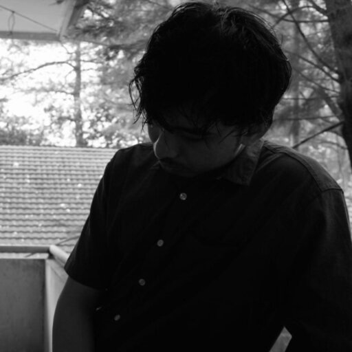

Profil
Dosen
Dr. Wahyudi, S.T, M.T
- Status Dosen: PNS - Dosen informatika
- Jabatan: Ketua Departemen
- Tempat Tanggal Lahir: Pekanbaru, 5 Mei 1981
- NIP: 198105052014041001
Rahmi Eka Putri, MT
- Status Dosen: PNS - Dosen informatika
- Jabatan: Sekretaris Departemen
- Tempat Tanggal Lahir: Payakumbuh, 23 Juli 1984
- NIP: NIP: 198407232008012001
Budy Satria, M.Kom
- Status Dosen: Pegawai Tetap Non PNS
- Jabatan: Ketua GKM
- Tempat Tanggal Lahir: Duri, 21 April 1992
- NIKU: 110199204202405101

Nurfiah, S.ST, M.Kom
- Status Dosen: Pegawai Tetap Non PNS
- Jabatan: Ka.Laboratorium
- Tanjung Makmur, 5 Agustus 1991
- NIKU: 110199108202405101
Luthfil Khairi, S.Kom, M.Cs
- Status Pegawai: Pegawai Tetap Non PNS
- Jabatan: Dosen
- Tempat Tanggal Lahir: Padang, 15 Juni 1994
- NIKU: 110199406202405102

Afdhal Dinilhak,S.Komp.,M.Kom
- Status Dosen: Dosen informatika
- Jabatan: Dosen
- Tempat Tanggal Lahir: _
- NIP: NIP: _
Anggi Hadi Wijaya S.pd, M.kom
- Status Dosen: Dosen informatika
- Jabatan: dosen
- Tempat Tanggal Lahir: _
- NIP: _
Derisma, MT
- Status Dosen: PNS - Dosen informatika
- Jabatan: Lektor
- Tempat Tanggal Lahir: Agam 19 April 1982
- NIP: 198204192010122001
Ajeng Dwi Asti.S.Komp,M.Kom
- Status Dosen: Dosen informatika
- Jabatan: dosen
- Tempat Tanggal Lahir: _
- NIP: _
Putri Sakinah, M.T.I
- Status Dosen: Dosen informatika
- Jabatan: dosen
- Tempat Tanggal Lahir: _
- NIP: _